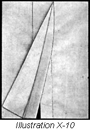

1926—The New-Way Course in Fashionable Clothes-Making
Lesson 10—Plackets
The Importance of Plackets
A dress or skirt made with an ill-fitting placket loses all its smartness, all its charm. A garment has no claim to beauty without a closing that is just right in every detail, a closing that subtly conceals any suggestion of fastening at the same time it imparts a neat, well-made finish. For how can it be charming, or how can it be beautiful, when the ill-fitting placket pulls to one side, or puckers up the material, or completely distorts its lines?
There is, in fact, no part of the garment which requires more care, more minute attention to detail, than the placket. You have noticed in a ready-made dress how important the closing is. If it does not close well, the entire dress seems to fit badly. If the placket is one little bit incorrect, one bit wrong in proportion, you feel awkward and uncomfortable when you wear the garment.
In this lesson you are going to learn how to make plackets that actually enhance the appearance of the clothes you make. You are going to learn how to make plackets that are neat, that are practical, that are sturdy and defiant of all the wear and tear of a hundred re-launderings. You are going to learn how to make plackets that are appropriate for heavy materials and others that are splendid for thin materials; plackets for tailored waists and plackets for pretty dresses. You are going to learn all there is to know about plackets—from the cutting of the opening to the final neat finishing touches.
To get the most from each lesson, the greatest benefit from each part of clothes-making, you must completely master each step as we outline it before you proceed to the next. Then there can be no mistakes, no difficulty. You will proceed definitely and positively towards your goal of expert clothes-making—slowly perhaps, but surely.
Determine now that you are going to master each detail of this lesson. We teach each new placket step by step, in the order most convenient and easy for you. Follow these steps, master each one, and when you have completed the lesson you will know how to make every practical placket that is ever used in dressmaking.
Continuous Plackets (Illustration X-1 and 2)
Where there is no seam in the garment, and a slash is made for the opening, the continuous placket is used. It is quite simple to make, but requires care and practice before it can be made neatly and correctly.
Plackets should be long enough to allow the garment to slip easily over the shoulders. They are never made less than nine and seldom more than eleven inches long. A firm finish at the lower end is very necessary as it is here the greatest wear will be.
On wash garments where a narrow finish can be used this placket may be made on the sewing machine using the binder attachment. Use the binding on the straight grain of the material. Begin at the upper left hand end of the placket and bind to the lower end. Stitch slowly at this point holding garment well within the scroll of the binder so the binding and garment edges will be firmly joined. Continue to upper right hand end of placket.
A little practice will be required before a perfect placket of this kind can be made.
The continuous placket with a wider finish should be made according to the following rules:
- Cut material to be used as a facing twice the length of the placket and twice the width of what the finished facing will be, allowing three-eighths of an inch for the seam.
- Stitch the facing to the edge of the slashed placket, using as narrow a seam as is possible. Illustration X-1.
- Turn the unsewed edge of the facing under and baste the folded edge so that it covers the seam. Stitch down firmly. Illustration X-2.
- Turn the right hand part of the placket back against the wrong side of the skirt, drawing the seam one-sixteenth of an inch from the edge.
- Sew the outer edge of the facing to the skirt with blind stitches from the top to the lower point of the placket. This makes the turned-under part for the hooks; the other side is allowed to extend under the turned-under part and on this the eyes are sewed.
Read over the directions again—carefully. Do you feel that you can make this placket without difficulty? Read it over again if you do not. Now take scraps of material, slash a place for the placket and proceed as directed. Always use light-weight material in making this placket as the continuous placket is meant for fine materials.
Lap Placket (Illustration X-3)
The lap placket is perhaps the least bit more difficult than the continuous placket. It is a very practical placket and is used a great deal in dressmaking. Follow each step carefully and you will have no trouble in learning how to make it.
Let us presume that you are making a skirt, and that this skirt will require a placket where the seams join. Before stitching down the seams, you must leave the basting open at the top of the seam where the placket is to be. With colored thread you then mark the line where the seams should be. Then you turn under the right hand side of this seam on the line of basting. If the material is light weight, three-eighths of an inch may be turned under and this finished as a hem (Illustration X-3) or the edge may be bound. Now you are ready to make the placket.
- First cut a strip of material for facing, using selvedge edge if possible.
- Sew this facing to the edge of the under part of the placket. This material is attached just as a facing is, with the right sides together for stitching, and then turned to the wrong side, the seam drawn one-sixteenth of an inch from the edge.
- Turn the unfinished edge and baste so the stitching which holds this down comes one-eighth of an inch inside the marked seam. Finish with blind stitching.
- At the bottom of the facing, turn the edge under.
- Hem this edge down to the garment and sew the fasteners in place. Lesson 12.
To Stay Lap Placket (Illustration X-4)
Very often the edges of the placket are bias and stretch easily. And sometimes the material itself is apt to stretch. In this case it is necessary to stay the plackets, so that they keep their shape.
- Proceed exactly as you did above for the lap placket, but use a piece of straight lining or a piece of tape just the width of the placket to baste exactly even with the line of colored basting.
- Baste the outer edge of the lining to the outside edge of the placket, or if tape is used the edge of the tape should come to the line of the second turning.
- Finish as for the lap placket; the finished placket will look exactly as the one made above—but it will have additional strength to resist the stretching tendencies of the material.
The necessity for staying plackets cannot be overestimated. If the placket is not stayed, when garment is of wool and the edge of the placket becomes stretched this extra fullness may be taken out by shrinking, but if the garment is of silk or cotton the placket can never be made to look well again. When marking for the fasteners on this placket begin at the bottom of the placket marking toward the top, placing the fasteners not more than one inch apart.
Lesson 12 teaches the marking and sewing of snap fasteners and hooks and eyes. Do not allow the stitches which hold the fasteners to the garment to show on the right side.
Extension Placket (Illustration X-5)
This type of placket is used where seams are narrow. Learn thoroughly how to make it for you will find much use for it later on.
- Allow the portion of the seam to be used for the placket to remain open, and mark the line of the seam as you did for the lap placket.
- Cut straight facing the exact width the placket is to be, plus one-quarter of an inch on either side for the seam and turning.
- The facing used for this placket should be one inch longer than the finished placket. If necessary it may be stayed as explained above.
- Baste the facing to the upper portion of the placket and make a seam one-eighth of an inch from the colored marking.
- Turn the facing on the colored marking to the wrong side of the material and baste.
- Turn the unfinished edge under one-quarter of an inch and hem down.
- Now you must finish the under part of the placket. Make an extension facing three-quarters the width of the upper part of the placket, and one inch longer than the finished placket is to be.
- Slip the edge of the seam between the folds of the extension facing, to within one-eighth of an inch of the colored marking, and stitch all edges of this extension.
- Turn the edge of the facing toward the finished edge of the extension facing and the bottom of the placket and overcast together. Use very fine stitches, close together. To finish, sew on fasteners.
- To stay the lower part of this placket, baste a strip of lining between the folds of the extension facing.
The Fold Placket (Illustration X-6)
Under plaits or folds the fold placket is most appropriate. Not only is it an excellent closing, but it is a neat, well-tailored finish. It is used most frequently on plaited skirts, and very often under box-plait trimmings. If used in a seam under a plait, the seam must be opened the length of the placket.
- Bind the edge of the upper or right hand side of the opening— left in the seam under the plait.
- Attach this edge to the skirt with blind stitching or if the plaits are to be stitched down, this will hold the upper placket in place.
- The under part of the fold placket is made by employing the sewed-on facing as taught in Lesson 8. Sew on fasteners.
- To prevent stitches from catching in the plait, oversew or bind the lower edge of the facing.
- Inside the placket, and at the very extreme end of it, take several back stitches to insure against ripping.
Sleeve Placket (Illustration X-7 and 8)
As the sleeve placket is a tailored placket its making requires great care. It must fasten up so perfectly that no attention is attracted to the opening, and it must be so neat and smart that it adds to the appearance of the finished garment. You will find that your time and effort is doubly repaid if you learn how to make this placket well.
The sleeve placket is used most frequently on men's shirts and ladies' tailored waists. It should always be made before the sleeve seams are sewed up, as this simplifies the making of the placket a great deal. It is usually from three-and-one-half to four inches long and one inch from the center of the sleeve toward the back or underarm.
- Cut the placket as indicated on your pattern.
- Cut a straight facing twice the length of your placket and three inches wide.
- Now place the right side of the facing to the wrong side of the seam, baste, and stitch as for a continuous placket. (Illustration X-7)
- When you have completed the above steps correctly, turn the upper part of the sleeve toward the top on a line with the upper end of the placket and cut the facing attached to the lower part of the sleeve one-and-one-half inches wide. (See Illustration X-7)
- Turn the unfinished edge of this facing under, baste and stitch to the line of seam. (Illustration X-7)
- Drop the top of the sleeve part into proper position, measure from the bottom of the sleeve and trim the facing five inches in length cutting straight across.
- Fold under one-quarter of an inch on the straight edge of the facing, bringing this turned edge to cover the seam, and stitch on the placket.
- Turn the top of the facing to a point, cutting off extra material.
- Baste flat and stitch close to this edge and twice across the top of the opening, being careful to catch the edge of the underfacing. (Illustration X-8)
It will probably be necessary for you to practice several times before you can make this placket as it should be made. Use inexpensive muslin, and follow the directions step by step. If you find you have made a mistake, begin all over again. But keep at it until you have mastered the sleeve placket perfectly, and until you feel that you can make one without referring to the lesson.
Hemmed Placket
Very often when skirts are made of very thin material, it is necessary to make a placket that is almost entirely concealed— otherwise the beauty of the finished garment would be seriously marred. To accomplish this, the hemmed placket is used, and it is so very simple that you will have no difficulty whatever in using it whenever you have occasion to do so.
To make the hemmed placket, simply hem the material on the right hand or upper side and finish the under portion with the pin hem. The very smallest of fasteners are used, and the placket is almost wholly unnoticeable. Of course, this type of placket is made only where a seam has been opened for it.
The Question of Closings
The closing has a great deal to do with the charm of a finished garment. If it does not close correctly, it will not fit correctly, surely it is not a perfect garment. And that is just what we are striving for—dresses and blouses and underthings that are made perfect in every detail.
On waists and undergarments it is often necessary to arrange closings that conceal the fastenings. To be more definite, when you are making a blouse of very sheer, fine material you will not want snap-fasteners or even buttons to mar its delicate beauty. You will want the closing to be practically invisible.
There are several methods of achieving the "invisible" closing, and we are going to explain them all to you in this lesson. Some of them you will use very soon; others you may not have occasion to use until late in the course. But each one of them represents an important detail of clothes-making that you must learn definitely and permanently. Study each one of the closings we are now going to take up carefully and you will know just when to apply them to the clothes you make as your study of dressmaking progresses.
Set-On Closing
This is not entirely an "invisible" closing—but you will find that it is very useful indeed. Where a stay is needed, for instance, on children's clothes the set-on closing proves most satisfactory. It can be made very substantial and wear-resisting as the facing used in making the closing need not be of the same material as the garment itself.
- The set-on closing is applied exactly as a sewed-on facing.
- In cutting the garment, allow three-quarters of an inch beyond the center for seams and turnings.
- Cut facing lengthwise of the material two-and-a-quarter to two-and-a-half inches wide.
- Place the facing on the garment, right sides together, stitch one-quarter of an inch from the edge and press the seam back against the facing.
- Now turn one-quarter of an inch of the unfinished edge of the facing to the wrong side, bringing this line of turning over to cover the line of stitching. Baste and stitch.
- Turn the double or finished facing against the wrong side of the garment, drawing the line of stitching one-eighth of an inch below the edge, and work buttonholes through the three thicknesses of material. (The making of buttonholes is taught in Lesson 12)
- You will probably find it a little difficult to make this closing at first. Do not be discouraged—very few students can make the set-on closing without trouble until they have practiced it several times. After you have tried it a few times, you will see how simple it really is. And you will be delighted later when you apply it to the blouses and underthings you make and you will see what a neat, well-made finish it gives to the garment.
Plain Fly Closing (Illustration X-9)
When fastenings are to be concealed under a hem, tuck or stitched box plait, a fly closing is used. It is an exceptionally neat closing and is used most frequently on tailored blouses and fine underwear.
- Cut a lengthwise strip of material two-and-one-half inches wide and the length of the closing.
- Fold this strip of material lengthwise through the center.
- If it is for a plain hem closing, cut the garment allowing one-and-three-quarter inches beyond center of garment. (In practice, just use another piece of material, sufficiently large enough.)
- On the left side make a hem five-eighths of an inch wide. This is the side on which the buttons will be sewed.
- On the right side turn one-quarter of an inch to the wrong side of the garment and make a second turning on the center line of the garment.
- Slip the unfinished edge of the folded strip under the edge of this hem and stitch through the five thicknesses along the line of the first turn of the hem. (Illustration X-9)
- Turn this fold against the hem; press in position and work in the buttonholes. The finish at top and bottom of the garment will hold this in place and at the edge of the fly, midway between buttonholes, the edges may be fastened to one thickness of the hem with several back stitches.
The closing we have just told you about is important—you must know it thoroughly. Don't attempt the next one until you are sure that you know this one without question or doubt. Practice it several times to be perfectly sure of yourself. Then proceed to study how the fly closing can be applied also under a box plait or under a tuck.
Closing Under Box Plait (Illustration X-10)
- Allow four times the width of the box plait plus one-quarter of an inch on the righthand side of the garment.
- On the left-hand side of the garment allow one and three-quarters, making a seven-eighths inch hem as for plain fly closing.
- Make a turn to the right side, on the right front, the width you want your plait to be when finished, plus one-quarter of an inch.
- A second turning must be made from the right side, twice the width the plait is to be.
- Machine stitch through the three thicknesses, one-eighth of an inch less than the width of the box plait from the last turn. This makes the fly on the plait.
- Fold the plait against the fly and press. Any desired trimming may be used on this plait or it may be left plain. Buttonholes are worked in the fly.
Closing Under Tucks
A fly may be placed under a group of tucks, and one tuck made to hide the stitching, holding the fly in place.
- Make a large tuck in the edge of the material one-quarter of an inch narrower than the whole group is to be, allowing one-fourth of an inch of the edge of the material to extend beyond the stitching of this tuck.
- Press this tuck flat away from the edge of the material.
- Make the turn for the edge of the first tuck in the group one-eighth of an inch beyond the turned edge of the large tuck.
- Stitch this tuck and make two more with the desired space between. This gives you one large tuck and a group of three small tucks.
- Make a turn for the fourth tuck in the group and on the wrong side insert the edge of the material which extends beyond the large tuck between the folds of the fourth small tuck.
- Stitch exactly as you stitched the other tucks. This stitching will be through three thicknesses of material.
- Press tucks. You now have a fly beneath the group of tucks in which to work your buttonholes but have added no extra seams to make the fastening clumsy.
- Finish the left side of the garment exactly as for fastening under box plait as taught in this lesson.
Armcye Closing (Illustration X-11)
Sometimes it is necessary to close a dress on the shoulder and under the arms. If there is no lining, an armcye facing on which to sew the snaps or hooks must be made. In making this closing, several kinds of facings are used;—on the front of the garment, across the shoulder and on the under-arm a straight sewed-on facing should be used; around the armcye curve an exceptional facing is used; on the under part a double facing two inches wide the exact outline of the shoulder and armcye, as shown in illustration. Be sure, when you are making this closing on a dress or blouse, that you make notches in the armcye as indicated by the pattern, as this is your sleeve adjustment mark. However, we will explain this in detail later.
- In making the armcye closing the facing is cut double and the right sides placed together.
- Stitch them together, turn to cover the seams, but do not baste.
- Make the seam lines match and baste the upper thickness of this facing to those parts of the shoulder and underarm where it is to be attached. Be sure that the seams are made on the wrong side.
- Stitch these seams and turn flat to facing.
- Turn the edges of the under facing along the seam line, baste and hem down to cover the line of stitching.
You now have an armcye formed by the back of the waist and the facing. Your sleeve will be put in exactly as it would if this facing were the front of the waist. If the garment is of heavy material make the upper side of the facing of the same material used in the garment, the under side of light-weight lining. Whenever you see a garment of any kind with an armcye closing, be sure to study it carefully as it will teach you some very valuable points.
To finish the closing, face the unfinished section of shoulder and underarms with the set-on facing taught in the earlier part of this lesson. Sew on fasteners.
Let us have a little review—like we used to have in school! Let us see just what we have learned so far in Book II.
First there is the silhouette. What have you learned about applying styles to your particular figure? How can you find your silhouette, so that you will know just what parts of your figure need special attention when it comes to the question of little style features? What is the significance of the silhouette and how does it help you achieve distinction in dress?
Then there are the bindings—how to make them with the remarkable time-saving binder attachment. And how to make perfect bias strips to use with the binder. Are you sure that you have thoroughly studied this lesson?
And the plackets, of course! The continuous placket, the lap placket, the sleeve placket. Do you know them all? Can you make each one? Do you know when to use the fold placket and when the extension placket? Do you know all about closings—the set-on closing, the fly closing, the armcye closing?
If there is anything of which you are not quite sure, anything that is still puzzling you the least little bit, turn right back and study it all over again. That's the way you'll become the expert clothes-maker you are going to be—by keeping at it until you master it. But remember that we're very anxious to help you all we can, and that you have the privilege of writing to use at any time and asking us about any point in the lesson that is not clear to you.